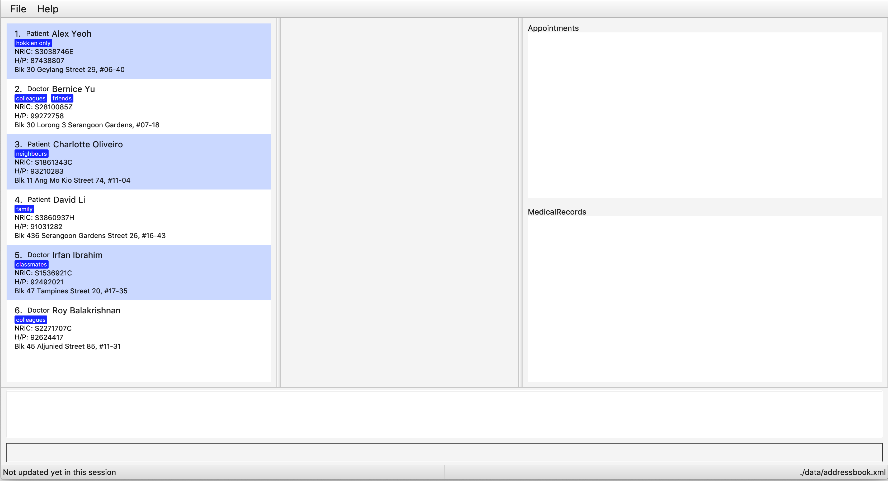
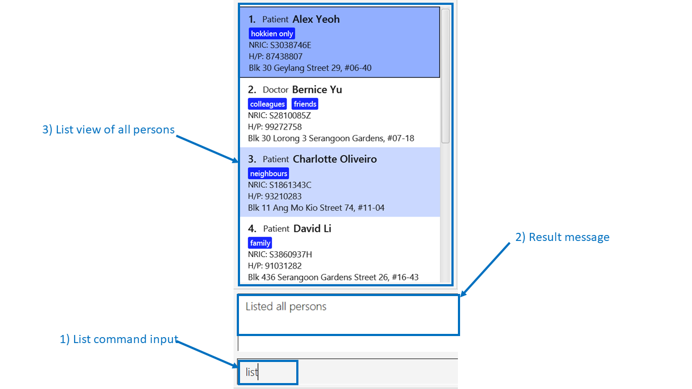
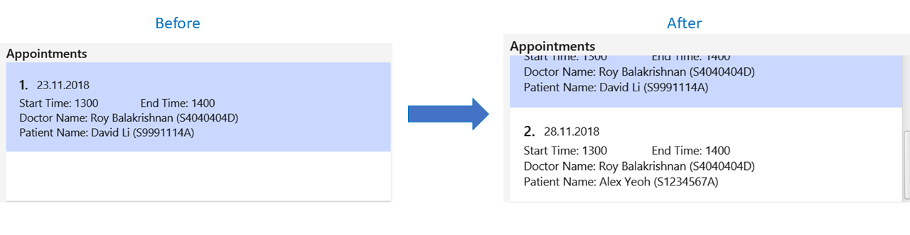

By: Team W16-3 Since: Sep 2018 Licence: MIT
- 1. Introduction
- 2. Quick Start
- 3. Features
- 3.1. Viewing help :
help - 3.2. Adding a person:
add - 3.3. Listing all relevant personnel :
list - 3.4. Editing a person :
edit - 3.5. Locating person by any attribute:
find - 3.6. Deleting a person :
delete - 3.7. Selecting a person :
select - 3.8. Listing entered commands :
history - 3.9. Undoing previous command :
undo - 3.10. Redoing the previously undone command :
redo - 3.11. Switching between different database :
switch - 3.12. Clear entries in active database :
clear - 3.13. Clearing all entries :
clearall - 3.14. Retrieving a list of available doctors :
avail - 3.15. Displaying medical appointments :
select - 3.16. Scheduling medical appointments :
schedule - 3.17. Displaying medical records of patients :
select - 3.18. Updating medical records of patients :
update - 3.19. Exiting the program :
exit - 3.20. Saving the data
- 3.21. Intuitive command prompting
- 3.22. Encrypting data files
[coming in v2.0]
- 3.1. Viewing help :
- 4. FAQ
- 5. Command Summary
1. Introduction
One Life (OL) is designed for service providers in the healthcare industry who prefer to use a desktop application for managing patient and doctor information. More importantly, One Life is optimized for those who prefer to work with a Command Line Interface (CLI) while still having the benefits of a Graphical User Interface (GUI). If you prefer typing, One Life can get your medical information management tasks done faster than traditional GUI apps. Interested? Jump to the Section 2, “Quick Start” to get started. Enjoy!
2. Quick Start
Listed below are instructions to help you get started:
-
Ensure you have Java version
9or later installed in your Computer. -
Download the latest
addressbook.jarhere. -
Copy the file into the folder you want to use as the home folder for One Life.
-
Double-click the file to start the app. The GUI (as shown in Figure 1 below) should appear in a few seconds.
Figure 1. One Life User Interface -
Type the command in the command box and press Enter to execute it.
E.g. typinghelpand pressing Enter will open the help window.
Some example commands you can try:-
list: lists all contacts. -
addr/patient n/John Doe p/98765432 e/johnd@example.com a/John street, block 123, #01-01 ic/S9601234A: adds aPatientnamedJohn Doeto the database. -
delete3: deletes the 3rd contact shown in the current list. -
exit: exits the app.
-
-
Refer to Section 3, “Features” for details of each command.
3. Features
Command Format
-
Words in
UPPER_CASEare the parameters to be supplied by the user e.g. inadd n/NAME,NAMEis a parameter which can be used asadd n/John Doe. -
Items in square brackets are optional e.g
n/NAME [t/TAG]can be used asn/John Doe t/friendor asn/John Doe. -
Items with
… after them can be used multiple times including zero times e.g.[t/TAG]…can be used ast/friend,t/friend t/familyetc. -
Parameters can be in any order e.g. if the command specifies
n/NAME p/PHONE_NUMBER,p/PHONE_NUMBER n/NAMEis also acceptable.
3.1. Viewing help : help
Opens user guide.
Format: help
3.2. Adding a person: add
Adds a Patient or Doctor to the database.
Adding a Patient
Format: add r/patient n/NAME ic/NRIC p/PHONE_NUMBER e/EMAIL a/ADDRESS [t/TAG]…
Adding a Doctor
Format: add r/doctor n/NAME ic/NRIC p/PHONE_NUMBER e/EMAIL a/ADDRESS md/MEDICAL_DEPARTMENT [t/TAG]…
A Person can have any number of Tag (including 0).
|
Examples:
-
add r/patient n/John Doe Xiao Huang ic/S1234567D p/98765432 e/johnd@example.com a/John street, block 123, #01-01 t/Hokkien
(Adds a new patient, refer to Figure 1 and 2 below for illustrations)


-
add r/doctor n/Betsy Crowe ic/S8234567A e/betsycrowe@example.com a/Newgate Estates p/1234567 md/dentistry
(Adds a newDoctor, refer to Figure 3 and 4 below for illustrations)

When adding a new Doctor you have to to specify his/her MedicalDepartment.
|
3.3. Listing all relevant personnel : list
Shows a list of all of the people in the database.
Format: list
3.4. Editing a person : edit
Edits an existing person in the database.
Format: edit INDEX [n/NAME] [ic/NRIC] [p/PHONE] [e/EMAIL] [a/ADDRESS] [t/TAG]…
Examples:
-
edit 1 p/91234567 e/johndoe@example.com
Edits the phone number and email address of the 1st person to be91234567andjohndoe@example.comrespectively. -
edit 2 n/Betsy Crower t/
Edits the name of the 2nd person to beBetsy Crowerand clears all existing tags.
3.5. Locating person by any attribute: find
There are two types of Find Commands: Global Find and Specific Find, which can be used in conjunction with one
another.
Format: find [PREFIX] KEYWORDS [NEXT_PREFIX] [MORE_KEYWORDS]
In order for a Person to show up on find, the Person must match all attributes in the input.(i.e. find n/alex r/doctor will show all Doctor named Alex. If another Alex is not a Doctor, he will not be
shown.)
|
3.5.1. Global Find
Global Find is a search on all attributes of all Person in the database.
It is performed when:
-
no
Prefixis included in the input, or when -
keywords are included before the first valid
Prefix.
When performing Global Find with more than one separate keyword, users can simply separate them using a [SPACE].
The Find Command will interpret the input as separate words to be searched globally.
|
Examples:
-
find kang
Displays allPersonwithkangin any of their attributes. -
find kang r/doctor
Displays allPersonwithkangin any of their attributes and whom is aDoctor. This is an example of Global Find used in conjunction with Specific Find. -
find alex doctor
Displays allPersonwithalexordoctorin any of their attributes.
The images below illustrate the utilisation of Global Find:


3.5.2. Specific Find
Specific Find is a search on attributes specified by the user. (i.e. Name, Phone etc).
It is performed when a Prefix is specified in the input field.
Below is a list of all searchable attributes and their corresponding Prefix:
Attribute |
Prefix |
Name |
|
NRIC |
|
Phone |
|
|
|
Address |
|
Role |
|
Tag |
|
Medical Department |
|
Medical Record |
|
Search keywords must be entered behind a Prefix whenever a Prefix is used in the input. A command like
find n/[BLANK] is not a valid input.The Prefix entered must also be valid.
|
Examples:
-
find t/friends
Displays allPersonwith theTaglabelledfriends. -
find t/friends r/doctor
Displays allPersonwith theTaglabelledfriendsand whoseRoleisDoctor. -
The images below illustrate the utilisation of Specific Find.

3.6. Deleting a person : delete
Deletes the specified person from the database.
Format: delete INDEX
Examples:
-
list
delete 2
Deletes the 2nd person in the database. -
find Betsy
delete 1
Deletes the 1st person in the results of thefindcommand.
3.7. Selecting a person : select
Selects the person identified by the index number used in the displayed person list.
Format: select INDEX
Examples:
-
list
select 2
Selects the 2nd person in the database. -
find Betsy
select 1
Selects the 1st patient in the results of thefindcommand.
3.8. Listing entered commands : history
Lists all the commands that you have entered in reverse chronological order.
Format: history
|
Pressing the ↑ and ↓ arrows will display the previous and next input respectively in the command box. |
3.9. Undoing previous command : undo
Restores the database to the state before the previous undoable command was executed.
Format: undo
|
Undoable commands: those commands that modify the database’s content ( |
Examples:
-
delete 1
list
undo(reverses thedelete 1command) -
select 1
list
undo
Theundocommand fails as there are no undoable commands executed previously. -
delete 1
clear
undo(reverses theclearcommand)
undo(reverses thedelete 1command)
3.10. Redoing the previously undone command : redo
Reverses the most recent undo command.
Format: redo
Examples:
-
delete 1
undo(reverses thedelete 1command)
redo(reapplies thedelete 1command) -
delete 1
redo
Theredocommand fails as there are noundocommands executed previously. -
delete 1
clear
undo(reverses theclearcommand)
undo(reverses thedelete 1command)
redo(reapplies thedelete 1command)
redo(reapplies theclearcommand)
3.11. Switching between different database : switch
Switches between the three different database available i.e. 1. doctor, 2. patient, 3. doctor and patient.
Format: switch r/ROLE
|
ROLE is case-insensitive and it accepts only three different parameters as follows: 1. Doctor 2. Patient 3. All |
|
Adding a person belonging to a different database is allowed but you would not be able to view it. E.g. Adding a new patient while viewing the doctor’s database. |
Examples:
-
switch r/Doctor
Switches over to display the doctor’s database as shown in the figure below:

-
switch r/Patient
Switches over to display the patient’s database as shown in the figure below:
-
switch r/All
Switches over to display a combined view of both patient’s and doctor’s database, shown in figure below:
3.12. Clear entries in active database : clear
Clears only the entries in the active database (currently in view of).
Format: clear
Example:
switch r/doctor
Switches over to the doctor’s database as shown in the figure below:
clear
Clears all the data in the currently active database i.e. clears all doctors' data only, shown in the figure below:
switch r/patient
Switches over to the patient’s database and as shown in the figure below, the patients' data are
still present:
| If the current active database is the combined database containing both patients' and doctors' data, then executing this command would result in clearing all entries from both databases. |
3.13. Clearing all entries : clearall
Clears all entries from both patient’s and doctor’s databases.
Format: clearall
This command when executed, clears all patients' and doctors' regardless of which database the user is
currently viewing, unlike the clear command where the deletion of data only applies to the active database.
|
3.14. Retrieving a list of available doctors : avail
Retrieves a list of all the doctors available at that moment or base on the date and time period indicated by the
user.
Format: avail [d/DATE] [st/START TIME] [et/END TIME]
| If no date is specified by the user, the system would use the current date by default. Similarly, if neither start nor end time is specified by the user, the system would use the current time as an input for both start and end time. |
| Also, there is a 1 minute buffer time allocated for doctors after the end of their appointments. This means that if a doctor has an appointment from 1100 to 1200, the doctor will be considered unavailable even at the time 1201. |
|
Inputs for both start and end time should either be both present or both absent. There should not be
an end time without there being a start time specified, and vice versa. |
Examples:
avail
List all doctors available at the moment (i.e. the date and time when the command is executed), as shown in the figure
below:

avail d/24.11.2018
List all doctors available on the 24th November 2018, at the time when this command is executed, as seen in the
figure below:

avail d/24.11.2018 st/1200 et/1300
Lists all doctors available from 12pm to 1pm, on the 24th November 2018, shown in the diagram below:
| This command will not work should the user be viewing the patient’s database, since this command applies only for doctors. In this case, executing this command will throw a message to prompt the user to switch the current active database to either the doctor’s database or the combined database containing both patients' and doctors' data. |
3.15. Displaying medical appointments : select
Displays a list of medical appointments that are currently scheduled for the specified person.
Format: select INDEX
Examples:
-
listdisplays the list of persons as shown in the figure below.Figure 21. Display list diagramselect 2selects the 2nd person in the database and display the appointments of that person as shown in the figure below. Figure 22. Display appointment diagram
Figure 22. Display appointment diagram -
find Betsy
select 1
Selects the 1st patient in the results of thefindcommand and display the appointments. Similar to the example above.
3.16. Scheduling medical appointments : schedule
Schedules a patient/doctor for a medical appointment at a specific date and time.
Format: schedule INDEX d/DATE st/START_TIME et/END_TIME dn/DOCTOR_NAME di/DOCTOR_NRIC pn/PATIENT_NAME pi/PATIENT_NRIC
| Overlapping of timing with existing appointments is considered a clash. E.g. 1300-1301 and 1301-1302 is a clash due to 1301. |
Examples:
-
schedule 1 d/23.11.2018 st/1300 et/1400 dn/Jack di/S1234567B pn/John Doe pi/S1234567A
SchedulesJohn Doefor an appointment with doctorJackon the 23nd of November 2018 from 1pm to 2pm.An example of a successful schedule is shown in the figure below.
 Figure 23. Successful schedule diagram
Figure 23. Successful schedule diagramAfter an appointment is successfully scheduled, the appointment list as shown below will be updated.
Figure 24. Change in appointment listAn example of an unsuccessful schedule is shown in the figure below.
 Figure 25. Unsuccessful schedule diagram
Figure 25. Unsuccessful schedule diagram
3.17. Displaying medical records of patients : select
Displays all the medical records of the specified person.
Format: select INDEX
Examples:
-
select 1
Displays the medical records of the first person on the displayed list as shown in the figure below.

3.18. Updating medical records of patients : update
Adds a new medical record for the patient as the most updated record using the specified date as date of record.
Format: update INDEX d/DATE dg/DIAGNOSIS tr/TREATMENT [c/COMMENTS]
| If no comments are specified, "-" will be displayed on the medical record. |
Examples:
-
update 1 d/13.11.2018 dg/Flu tr/Tamiflu
Updates the medical records of the patient at index 1 with the given date, diagnosis and treatment without any comments as shown in the figure below.
-
update 1 d/13.11.2018 dg/Flu tr/Tamiflu c/To be taken thrice a day after meals.
Updates the medical records of the patient at index 1 with the given date, diagnosis, treatment and comments as shown in the figure below.
3.19. Exiting the program : exit
Exits the program.
Format: exit
3.20. Saving the data
One Life data are saved in the hard disk automatically after any command that changes the data.
There is no need to save manually.
3.21. Intuitive command prompting
Provides a more natural way of entering commands into One Life. One Life will prompt the user for the next required input - no prefixes are required.
Commands that support intuitive prompting:
Format: COMMAND
Type /bk to re-enter previous field.Type // if the field is to be left blank (only available for optional fields).Press ESC to cancel the currently executing command.
|
Examples:
-
add
Starts an intuitiveaddcommand. This triggers the intuitive command prompt, and One Life will begin to guide you through the command with instructions, as shown in the figure below:
add command-
patient
Specifies that a patient is to be added to the intuitive command prompt. The intuitive command prompt then asks for the next input, in this case the patient’s name, as shown in the figure below:

-
/bk
Goes back to the previous field. A new input can be reentered for this field, as shown in the figure below:

-
ESC
Cancels the intuitive command. This clears the command box and exits the intuitive command, allowing for normal operation again, as shown in the figure below:

3.22. Encrypting data files [coming in v2.0]
{explain how the user can enable/disable data encryption}
4. FAQ
Q: How do I transfer my data to another Computer?
A: Install the app in the other computer and overwrite the empty data file it creates with the file that contains the data of your previous One Life folder.
5. Command Summary
-
Add Patient :
add r/patient n/NAME ic/NRIC p/PHONE_NUMBER e/EMAIL a/ADDRESS [t/TAG]…
e.g.add r/patient n/James Ho ic/S1234567A p/22224444 e/jamesho@example.com a/123, Clementi Rd, 1234665 t/friend t/colleague -
Add Doctor :
add r/doctor n/Bobby Tan ic/S1234567B p/91234567 e/BBTan@example.com a/123, Clementi Rd, 123456 md/Dentistry -
Clear :
clear -
Delete :
delete INDEX
e.g.delete 3 -
Edit :
edit INDEX [n/NAME] [p/PHONE_NUMBER] [e/EMAIL] [a/ADDRESS] [t/TAG]…
e.g.edit 2 n/James Lee e/jameslee@example.com -
Find :
find KEYWORD [MORE_KEYWORDS]
e.g.find James Jake -
List People :
list -
Help :
help -
Select :
select INDEX
e.g.select 2 -
History :
history -
Undo :
undo -
Redo :
redo -
Display Medical Appointments :
select INDEX -
Schedule Medical Appointments :
schedule INDEX d/DATE st/START_TIME et/END_TIME dn/DOCTOR_NAME di/DOCTOR_NRIC pn/PATIENT_NAME pi/PATIENT_NRIC
e.g.schedule 1 d/23.11.2018 st/1300 et/1400 dn/Jack di/S1234567B pn/John Doe pi/S1234567A -
Display Medical Records :
select INDEX -
Update Medical Records :
update INDEX d/DATE dg/DIAGNOSIS tr/TREATMENT c/COMMENTS
e.g. `update 2 d/22.11.2018 dg/flu tr/tamiflu